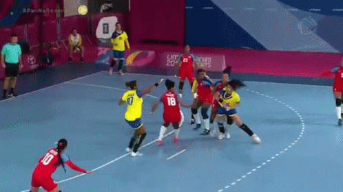

TCHOUKBALL

Consiste en lanzar la pelota a cualquiera de los dos arcos, situados a los extremos del campo, intentando que en el rebote, el equipo contrario no la coja y toque el suelo para conseguir el punto. No puedes estar más de tres segundos con el balón en la mano
Viajemos a Suiza donde se creo en Tchoukball
Este deporte es mas conoido como el deporte de la paz, su s}sede inicial en Ginebra,pero actualmente se encuentra en Taiwán
En el juego participan dos equipos, cada uno con siete jugadores. En una cancha que mide 20 x 40 metros (esta medida es variable) se ubican dos pequeños trampolines o centros de rebote, uno en cada extremo.
Los jugadores tienen una pelota y el juego consiste en hacer que dicha pelota impacte en los centros de rebote y, al rebotar, caiga en el piso. Los jugadores pueden rebotar la pelota en cualquiera de los dos trampolines.
En la cancha se estipula una zona prohibida frente al cuadro de rebote, que mide tres metros, en la que la defensa no puede ubicarse.
El partido tiene tres tiempos, cada tiempo dura 15 minutos. Está prohibida la obstrucción (el balón se recuperara después de un punto o de una falta) y la pelota no debe caer en el suelo; en caso de que caiga, el turno de juego será para el equipo contrario.
Formas de anotar puntos
– Cada vez que la pelota impacte en el centro de rebote y luego caiga en el piso.
– Cuando el jugador de la defensa deja caer el balón una vez rebotó sobre él, luego de haber impactado en la malla elástica.
– Cuando el jugador de la defensa detiene la pelota estando ubicado en la zona prohibida.
– Cuando la pelota rebota debajo de la rodilla del jugador de la defensa.
Serán un punto en contra si:
– La pelota impacta en la malla y rebota en el área prohibida.
– La pelota cae fuera de la cancha.
– El balón no impacta en el cuadro de rebote.
– El balón rebota sobre el jugador que lo lanzó contra la malla.